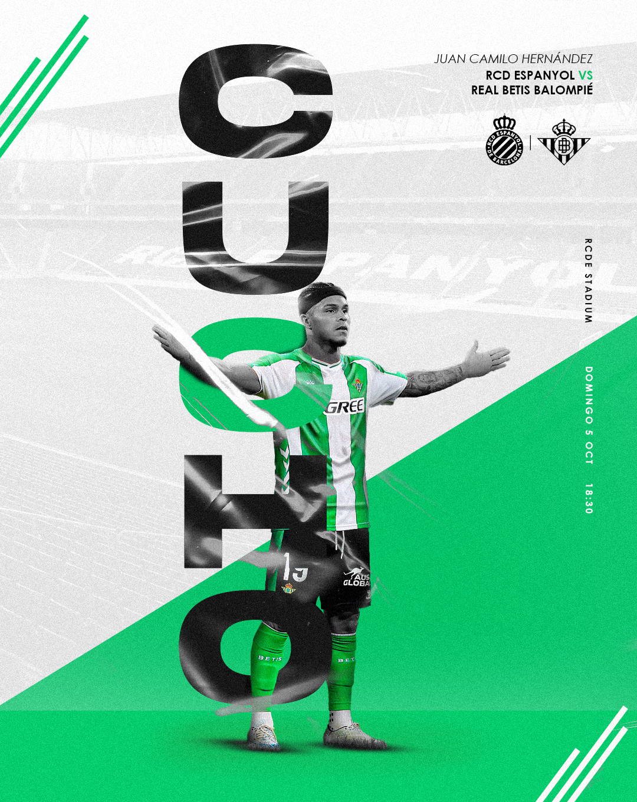
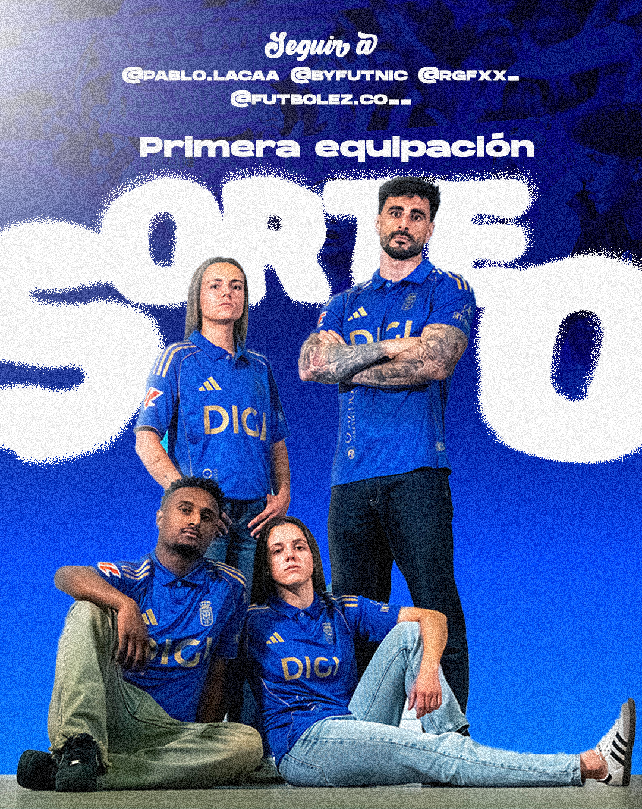
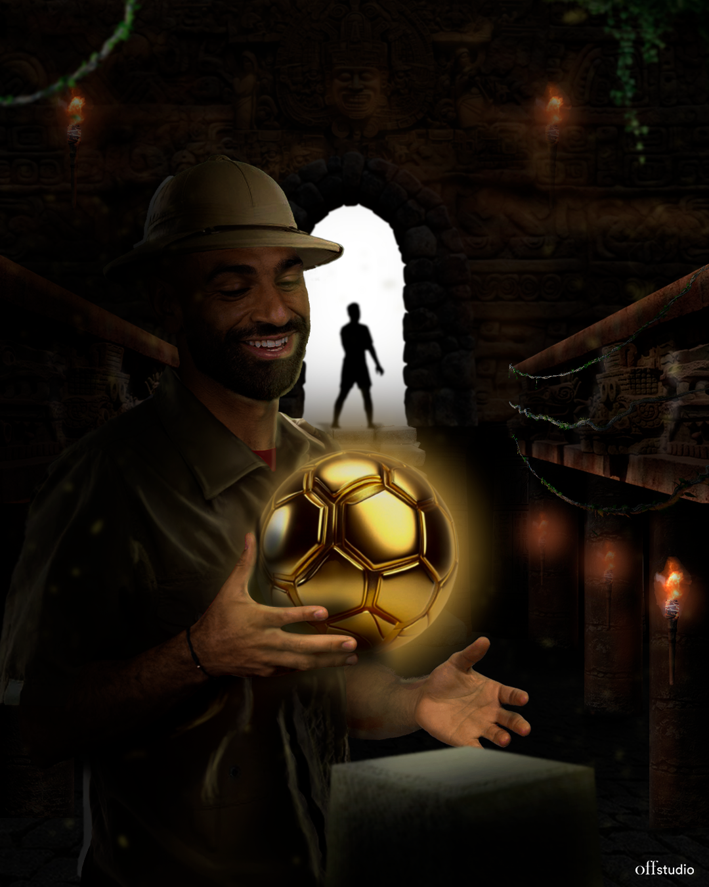
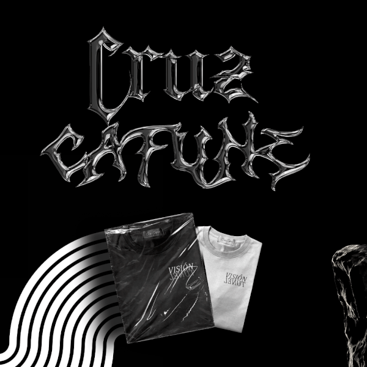
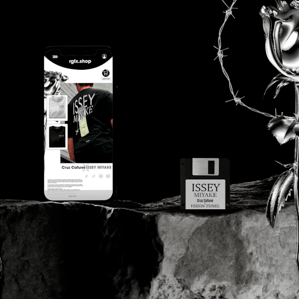
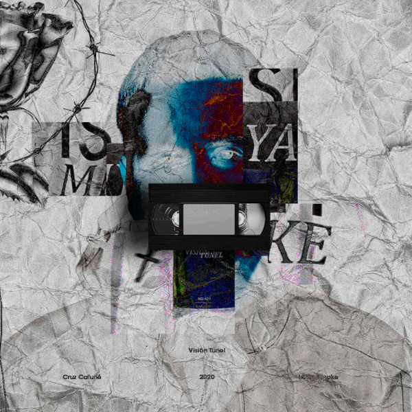

Me llamo Rafael Rondon, soy un programador en aprendizaje con una sólida base creativa gracias a mi formación
como Técnico Superior en Gráfica
Publicitaria. Combino el diseño visual con el desarrollo web para crear proyectos equilibrados entre
estética y
funcionalidad. Me motiva aprender nuevas tecnologías y seguir creciendo en el mundo digital
"La creatividad es la inteligencia divirtiéndose." – Albert Einstein
Proyectos
En esta sección, os enseño mis proyectos más destacados
Diseño deportivo
Matchday Real Betis vs Real Sociedad 
Mathday Juan Camilo Hernández

Diseño sorteo camiseta OviedoDiseño Matchday Kvara Ypsonas-Anorthosis

Diseño sobre Mohammed Salah recogiendo un Ballon d'Or
Promocion camiseta Issey Miyake | Cruz Cafuné
Diseño de camiseta por la canción de Cruz Cafuné "Issey Miyake", y video promocional para la venta de esta.
Carrusel Instagram y Mockup Camiseta



Video Promocional
El diseño del video promocional se trata de una animación realizada en Adobe After Effects, en la que se
simula el proceso de compra y el diseño de una supuesta página web donde se pueden adquirir las camisetas,
junto a un modelo 3D que enseña como es la camiseta que se va a comprar
Maquetación Revista Real Betis Balompié
Maquetación de una revista del Real Betis Balompié donde se redacta toda la historia del club desde su fundación
hasta la actualidad, en ella se encuentran, fotos videos, y más información sobre este. Trabajo realizado como
TFG
Maqueta de la revista
Video promocional
Video promocional de la revista
GRACIAS POR SU VISITA
Contacto
Puedes ponerte en contacto conmigo mediante los siguientes medios: